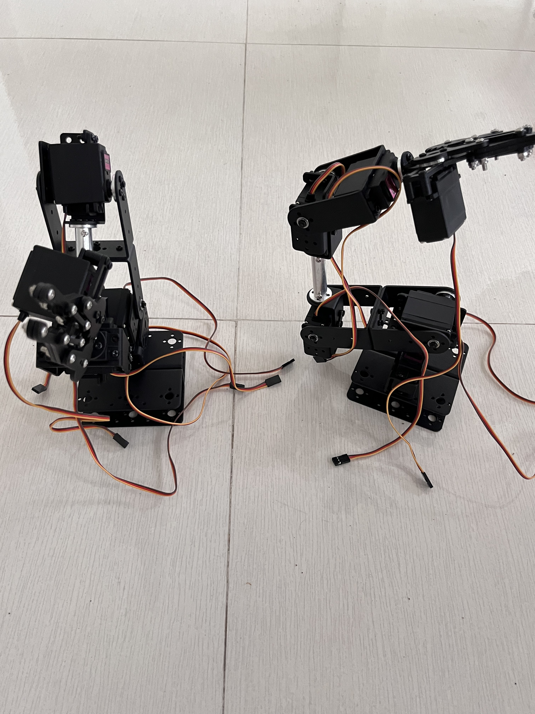
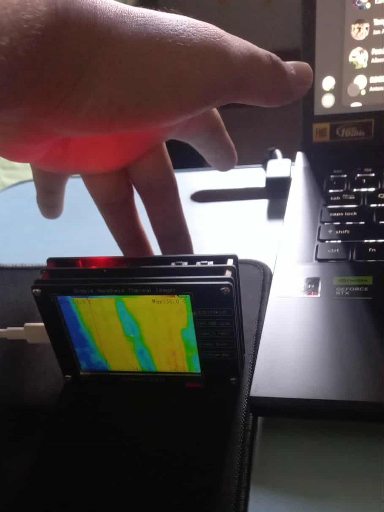

BSEE-3A
Bicol University College of Engineering, Legazpi City, Albay, Philippines, 4500
(SUBSTATION INSPECTION & REMOTE INTERVENTION UTILITY SYSTEM)
An electrical substation serves as the heart of a power system. This is where change, inspection, and control of voltage and current take place to ensure that electric energy is delivered safely from power plants to consumers. However, despite its importance, inspection and maintenance of substations is still marked as a challenge in this field. Workers assigned for inspection and maintenance are subjected to the risks and hazards of a substation. This situation consumes more time and gives health risks to workers, which results in difficulty in maintenance and inspection. One of the problems in this field is the limitation of manual inspection. Sole reliance on human workers to inspect, maintain, and select defective equipment takes more time, which can cause massive damage to the system when overheating or loose connections are not detected at an early stage. Aside from this, workers are put at health risks and accidents, especially when inspecting high-voltage areas. This kind of incident causes loss in human lives and economic growth. In the Philippines, this kind of innovation is particularly important. As an archipelagic country, electric energy distribution is a bit of a challenge. Several substations are located in places that are far and difficult to inspect. Thus, manual inspection consumes a bigger amount of time and money, and it needs additional workers as well as logistic support. To address this, building a robotic system that is cost-effective and easy to apply in a local context is crucial. According to Proven Robotics, robots are now widely applied in the electronics industry to test efficiencies and reduce the risks involved. Such versatility indicates potential changes across different sectors through robotics. In addition, NerdBot has mentioned that there is increased demand for robotics in electrical engineering courses to develop a more robust foundation and importance for projects that prepare students for real-life applications.


Project Sirius Mk. ll is an inspection assistant that can monitor the condition of equipment in a substation using different sensors. This serves as an alternative way of inspection that is safer and more efficient, rather than relying on manual inspection. Project Sirius Mk. ll is not just a simple prototype but a stepping stone for safer and more efficient inspection of substations. This project integrates the practical needs of the industry and the academic goal of electrical engineering education. This showcases the potential of future engineers to create solutions to problems with a direct effect on the community.
Project Sirius Mk. II is not just a practical solution to substation inspections but is an application of theoretical concepts relative to electrical engineering. This project has a huge relevance to the principles of feedback and control systems, which serve as the foundation of modern robots and automation. One of the most important aspects of control theory is closed-loop control. In Project Sirius Mk. II, the sensor readings are frequently monitored and used to adjust the motor outputs. This mechanism shows the actual application of the feedback concept, where the system automatically corrects itself based on real-time data (Britannica, 2025). Part of closed-loop control in a robot is its ability to correct errors. Whenever there's an error like misalignment of a robotic arm or a wrong sensor reading, it will be detected immediately, and then the controller will correct it. This is an example of error dynamics that emphasizes control theory. This shows that the system will still be reliable even when faced with uncertainties (Discover Engineering, 2025). Project Sirius Mk. II development will henceforth aim at precision and durability with an error conditioning operational system closed in feedback control.
The feedback and control systems provide an academic project context for Project Sirius Mk II. This project not only serves as a prototype that answers the need for inspection but also as a real-life application of the principles tackled within electrical engineering. This shows how even the most abstract concepts, such as transfer functions, stability margins, and error dynamics, are applicable in a real robot. This project is a demonstration of the application of the theoretical and conceptual framework of feedback and control systems.
The primary objective of this project is to design a prototype of an intelligent robot with a system displaying the application of the principles of feedback and control systems. The system intends to address practical issues in distribution substations, especially equipment inspection, condition monitoring, and safe remote operation.
To achieve the general objective, the project pursues the following specific objectives:
1. To design a feedback loop capable of providing realtime sensor data to ensure reliable and accurate robot operation.
2. To use PID control to maintain system stability and precision in executing substation tasks.
3. To create a prototype of a core functionality that is directly relevant and core to substation operations, such as: - Thermal imaging for detecting hotspots in busbars, transformers, and breaker contacts. - Vibration and noise monitoring for identifying abnormal mechanical activity in cooling fans, pumps, and transformers. - Environmental monitoring for measuring temperature and humidity, and detection of gas leakages like SF6.
4. To perform system testing and response analysis to assess the robot's effectiveness under real-life scenarios concerning obstacle avoidance, monitoring functions, and remote actuation.
The main focus of robotics is feedback control, providing machines with intelligence and stability. Closed-loop systems are robots that collect data from sensors and compare it with the desired state, using the error signal for actuator movement adjustments. This mechanism grants autonomy and resilience, thereby making it imperative for successful operations in critical areas like surgery, manufacturing, and disaster response (AZoRobotics, 2025). Feedback mechanisms for a long time have had applications that range from the simplest mechanical governors to advanced robotic systems. These soft types of robots require more complex feedback because of their flexible and non-linear dynamics.Some studies demonstrated model-based dynamic feedback control as a method of improving trajectory tracking and allowing for safe interaction in planar soft robots, which have been considered very difficult to control due to their compliance (Della Santina et al., 2020).
The importance of feedback in control depends on the system's stability. Long feedback loops may cause the oscillation or overreaction of the robot, which can, in turn, bring about dangerous or inefficient operations. The controllers designed suitably for such situations enable smooth responses to disturbances such as particle vibrations, friction, and external forces. This ability becomes critical, especially for mobile robots traversing uneven terrains (Peng et al., 2025).In addition to providing stability, feedback control also provides robustness. In real life, sensor data is rarely flawless; noise, delays, and degradation are the order of the day. No matter how imperfect this input may be, the feedback mechanism does everything to keep performance on par. In industrial robotics, force feedback ensures that the right amount of pressure is maintained during welding and assembly so as not to damage the product (Wang, 2025). Some recent investigations have exploited the use of feedback control in conjunction and integration with optimization methods.Feedback control methods such as bioinspired algorithms, including particle swarm and genetic algorithm systems, attempt to robot arms in tracking the decreased errors so that accuracy and reliability increase in task scheduling. Thus, such a combination fosters profound reasoning for advanced feedback control systems in the industrial field (Kuo et al., 2024).
Feedback control is demonstrated to be equally important in industrial applications. Robotic arms executing precision tasks, like micro-assembly and welding, continuously measure position and force via sensors, and controllers correct movements to eliminate any errors. This mechanism is responsible for very high repeatability, an important aspect for mass production. Feedback control also finds its application in logistics robots, which allows them to traverse through warehouses safely without colliding with any obstacles (Wang, 2025). Feedback control mechanisms also guarantee safe navigation through warehouses for logistics robots without hitting obstacles (Wang, 2025). This field is developing quickly with experimental applications of brain-inspired and AI-driven feedback control. Techniques from biomimetics and applications of neural networks in humanoid and soft robot control are data-based approaches interfaced with the feedback system. This novel area of research is laying the foundations for the development of robotic systems that are flexible, intelligent, and human-like (Alepuz et al., 2024).


The Project Sirius MK. II's core movement relies on a modified toy car equipped with ultrasonic sensors and LiDAR. The movements of the vehicle in the substation yard are mostly performed in a fast and efficient way, where the possibility of collision with poles, panels, and other equipment is kept at an absolute minimum. The speed and directional control of these movements employ a PID method with stable performance for instant applied changes in the environment; these alterations approximate smooth trajectories by taking into consideration proportional, integral, and derivative aspects of position and speed correction. This technique is commonly used in robotics because it is simple and efficient. For the complex environment at a substation, a single sensor does not suffice. Sensor Fusion integrates inputs from both ultrasonic and LiDAR sensors to mitigate false positives, such as mistaking shadows or reflections for obstacles. Therefore, the robot becomes spatially much more aware with fusion and plans its path more reliably, making it possible for fully autonomous navigation in places where critical equipment is located. The vibration monitoring subsystem helps in sensing abnormal movement in cooling fans, pumps, and transformers. The vibration patterns vary according to the load, age of the equipment, and surrounding ambient noise; therefore, fixed thresholds are inadequate. Adaptive control is used to adjust sensor sensitivity automatically. The method provides a better detection of abnormal vibrations while minimizing false alarms. These adaptive strategies serve as a crucial preventive maintenance tool, enabling the early detection of mechanical failure signs before they escalate (Pham & Kuo, 2025).
The safety layers provided by monitoring environmental factors include temperature, humidity, or gas leak detection, such as SF6. Since sensors work with data that is not always accurate, fuzzy logic is implemented to interpret it in a more nuanced way. For instance, an increase in relative humidity and temperature may signal the robot to infer overheating, even if these two parameters have not overstepped their limits. Through fuzzy rules, the robot can generate intelligent alerts and has been proven effective on collisionfree path planning for manipulator robots under uncertainty (Hentout et al. 2022). The camera subsystem is supposed to read indicator lights on circuit breakers and on relays. The parameters of image recognition includes intensity, color, and position-all of which make it more appropriate for state-space control than for a simple PID. The mathematical representation of the system dynamics is given by state-space modeling, which integrates visual data into the decision-making. This offers real-time analysis of visual information and better identification of breaker states (IEEE, 2025). The six-degree-of-freedom arm requires strict control of each joint in opening or closing the panels within the substation. Smooth and accurate movements are ensured at each joint by applying respective PID loops to all joints. Proportional action takes place immediately from the value of instantaneous error, integral action eliminates steady-state error, and derivative action provides to reduce overshoot. This ensures stabilized operation, which is important for high-precision tasks like locking and unlocking the panel (IEEE PID Arm, 2024). For more complicated trajectories with multiple joints in simultaneous motion, a hybrid approach is implemented. It ensures fast local response and global arm dynamics coordination through the fusion of PID with state-space control, facilitating safe and predictable motion, even under high collision risk in multi-joint tasks.
The control strategies of Project Sirius MK II are configured according to the needs of each subsystem. The PID for motors and joints; adaptive control for vibrations and uncertain loads; fuzzy logic for environmental monitoring and safety; state-space control for multi-variable subsystems like camera and arm coordination; and supervisory control for interactive integration of all modules into one system. This makes Project Sirius MK II a robust, smart, and safe solution for substation inspection and remote intervention.
The interior of the robot consists of several significant subsystems like obstacle avoidance sensors, vibration monitoring modules, a thermal imaging unit, a camera subsystem, environmental monitoring sensors, and control boards for the robotic arm. Their arrangement follows the principles of 3D interactive scene construction described by Fan and Liang (2024), where virtual reality and deep learning are used to model spatial layouts. In Project Sirius MK. II, this principle was adapted to ensure that sensors do not interfere with one another and that electronics are positioned to optimize data flow. Externally, the robot is built on a modified toy car chassis that serves as a base for all subsystems. The chassis was designed to endure and adapt to the varied conditions of a substation yard. Su and Huang (2024) emphasize that structural design and performance evaluation of microtracked chassis improve terrain adaptability, and the same principle was applied to Project Sirius MK. II to ensure smooth movement even on uneven ground or in areas with debris.
Beyond structural evaluation, design optimization was achieved using artificial neural networks, as discussed by Rebhi et al. (2025). The study shows how neural networks can be employed in optimizing load distribution and structural integrity. This strategy was deployed on Project Sirius MK. II to ensure that the robot is properly supported and resistant to wear in prolonged operation. The integration of interior and exterior subsystems is anchored in mathematical and control models. According to OrtigosaMartínez et al. (2023), mathematical modeling in soft robotics offers the framework by which flexible systems could subsequently be analyzed and controlled. Project Sirius MK. II adopts similar models to ensure that sensors, actuators, and control boards are seamlessly integrated with the chassis and external mounting. The robotic arm requires stable control to perform panel manipulation tasks. Alizadeh and Zhu (2024) state that state-space frameworks are crucial in controlling multi-joint arms in space robotics. Project Sirius MK. II uses this principle to keep the arm stable even while it is mounted onto a mobile chassis for more accurate movements and safer operations in substations. Besides state-space modeling, supervisory control is also important in coordinating all subsystems by a central control center. This supervisory layer manages communications across individual modules and synchronizes operations, hence including obstacle avoidance, vibration monitoring, environmental sensing, camera imaging, and robotic arm control.
The interior subsystems were structurally organized through the application of VR-based modeling. The structural optimization of the exterior chassis was done using neural networks and structural evaluation. The integration of both was supported by mathematical and state-space models. Cost analyses were structured according to established collaboration robot models for transparency and accountability across teams. These approaches make the project even more robust, intelligent, and well-prepared for conducting inspection and intervention at substations through remote means.
Project SIRIUS MK. II represents more than just a technical achievement—it embodies teamwork, innovation, and perseverance. Through months of planning, designing, and testing, the team not only developed an intelligent inspection system but also gained valuable lessons in collaboration and problem-solving. The project demonstrated how modern automation can significantly enhance operational safety and efficiency in electrical substations. Beyond the hardware and programming, it taught the importance of persistence, adaptability, and shared goals. As future engineers, we envision this project as a stepping stone toward smarter, safer, and more sustainable industrial solutions. The experience has strengthened our confidence to take on even greater challenges ahead.
Bicol University College of Engineering, Legazpi City, Albay, Philippines, 4500

Engr. Rogie Mar A. Bolon
Engr. Vincent Domo Diaz
Engr. Melody Mae P. Montas
Institute of Integrated Electrical Engineers
Purpose / Function: Designed to demonstrate mechanical movement using servo motors; intended for controlled motion once electronics and programming are integrated. Current Known Features: Fully assembled mechanical structure with bolts, screws, servo motors, and servo brackets.
Purpose / Function: Provides foundation for the robot arm system; part of the exterior and base sketch created between Oct 16–22. Current Known Features: Base design completed during early sketching phase.
Purpose / Function: To monitor environmental parameters such as temperature and humidity. Current Progress: The AHT20 sensor has arrived as a replacement for previous faulty temperature sensors. The component has been tested and is fully functional. A PCB layout for the environmental monitoring module has been created, and the team is preparing to print and etch the board for integration into the system. This will provide accurate and reliable environmental data for monitoring purposes within Project Sirius Mk. II.
Purpose / Function: To capture thermal imagery of the environment using a drone-based system. Current Known Features / Progress: The drone has been calibrated for flight, including connecting the remote control to a mobile device for live footage mirroring and adjusting manual controls for precise operation. Test flights have been conducted to determine the maximum control distance.
Purpose / Function: Detects vibration as part of the monitoring system. Current Known Features: PCB layout completed; all electronic components tested and working as of Nov 5.
Purpose / Function: Acts as a visual and interactive platform for the project. Current Features: Clean, responsive layout Home button + menu with six group links Overlays for members and galleries are integrated, with smooth UI interactions. Scroll-triggered fade-in animations for narratives